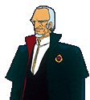
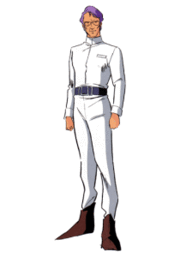
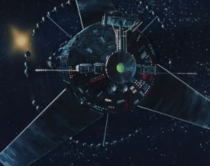
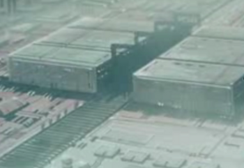

Green Noah & Green Oasis Green Noah & Green Oasis
Side 7 Bunch 1 Mirrored Colony Cluster Jamitov Heiman The two colonies of Green Noah and Green Oasis still maintain a large civilian population, but the colonies themselves, especially Green Noah, have been turned into military bases used for research and development. The projects at Side 7 are numerous, and although the base is not as heavily defended as Luna II, it maintains enough of a ship compliment to deter potential raiding parties on constant alert.  Jamitov Heiman A ruthless Earthnoid imperialist known for his detest of spacenoids and his despicable tactics, Jamitov believes in two things, the superiority of the Earth Federation, and the need for constant technical advancement. He has many friends amongst the EF brass, and is spearheading many research projects from the bowels of Green Noah.  Tem Ray The chief scientist behind the V Project and the design head behind the Federations mobile suit project, Tem Ray is currently living in Side 7 working on his final masterpiece, the RX-78-2 Gundam. He is a diligent scientist, foregoing his own responsibilities as a father for his work, much to the disdain of his son Amuro. Green Noah and Green Oasis  |